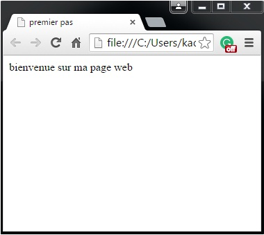

Introduction
Qu’est ce que le langage html
- si les éditeurs Html vous faciliteront grandement la tâche, ils ne sont pas toujours parfaits surtout lors des modifications, annulations ou suppressions en cours de travail. Il vous faudra bien alors vous plonger dans le code source pour corriger les dysfonctionnements.
- les codes source de vos pages préférées sont disponibles (et sans copyright). Il est alors possible de s'en inspirer pour reprendre le procédé sans avoir à réinventer.
- ces mêmes éditeurs Html vous proposeront des termes comme" En-tête, Heading, Cell spacing, Numered List..." qui sont propres au langage Html.
- vous aurez besoin d'une connaissance pointue du Html pour inclure les codes du PHP, Javascript ou VBscript dans vos pages.
Premières balises
- Vous aurez remarqué qu'à chaque balise de début d'une action, soit <...>, correspond (en toute logique) une balise de fin d'une action .
- Vous noterez aussi que les balises ne sont pas "case sensitive". Il est donc équivalent d'écrire <HTML>, <html>, <Html>, etc
Premier pas Html:
HTML est le langage universel utilisé pour communiquer sur le Web. Votre information sera ainsi transportée sur cette gigantesque toile de réseaux interconnectés qu'est Internet, pour aboutir sur l'ordinateur de votre lecteur grâce à un programme appelé navigateur ou browser.
Ce logiciel, que l'on appelle un browser ou navigateur, vous permet de surfer sur le Net et d'afficher sur votre écran les pages qu'il a interceptées.
Il y a, hélas, beaucoup de marques et de types de browsers différents. Des simples, des archaïques ou des sophistiqués... Les plus connus sont FireFox de Mozilla, Internet Explorer de Microsoft et Netscape dans sa version 2, 3 et 4.
Le langage Html étant un ensemble de balises et d'attributs, il nous paraît utile sinon indispensable de les passer en revue et surtout de les visionner au moins une fois car :
<HTML>
Ceci est le début d'un document de type HTML.
</HTML>
Ceci est la fin d'un document de type HTML.
<HEAD>
Ceci est le début de la zone d'en-tête (prologue au document proprement dit contenant des informations destinées au browser).
</HEAD>
Ceci est la fin de la zone d'en-tête.
<TITLE>
Ceci est le début du titre de la page.
</TITLE>
Ceci est la fin du titre de la page.
<BODY>
Ceci est le début du document proprement dit.
</BODY>
Ceci est la fin du document proprement dit.
|
- Ecrire les codes Html suivants: <HTML> <HEAD> <TITLE>premier pas </TITLE> </HEAD> <BODY> bienvenue sur ma page web </BODY> </HTML> -Enregistrer le document avec l'extension .html ou .htm. -cliquer sur la page web pour visualiser |
 |